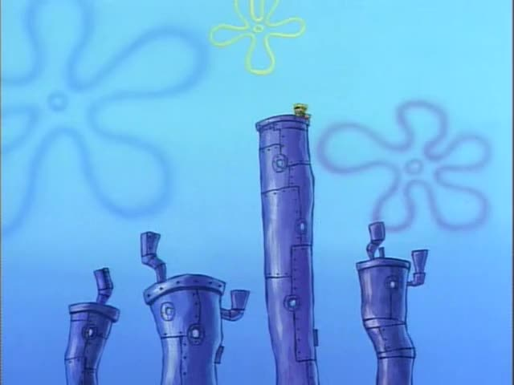
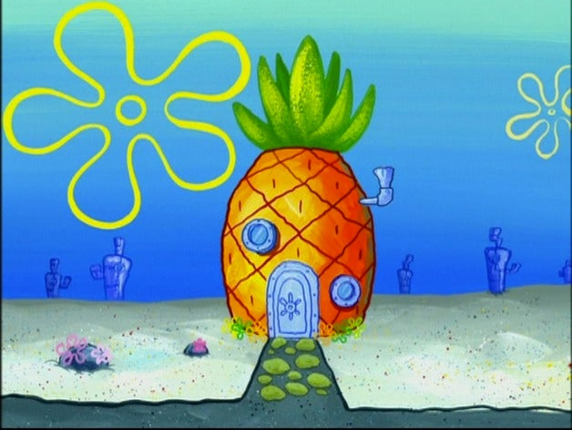
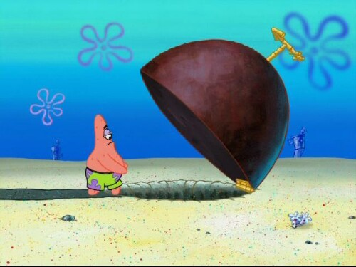
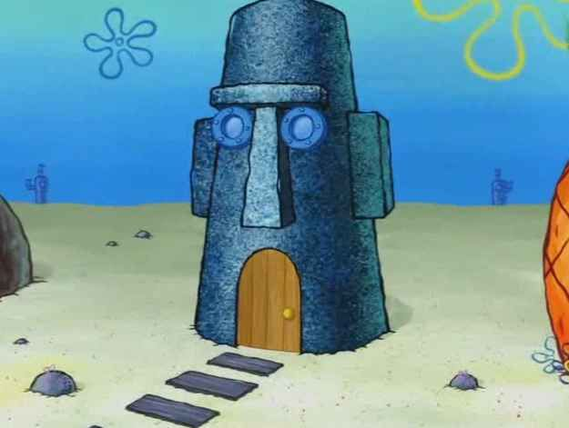
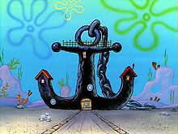
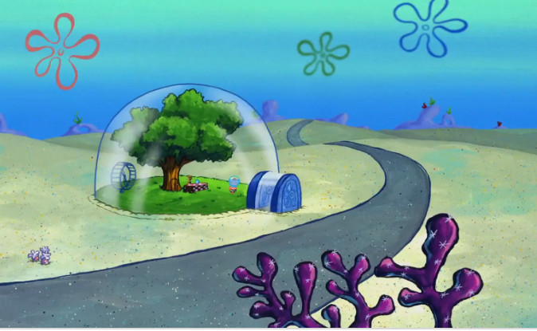
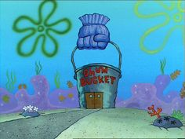

Alle huizen in Spongebob hebben een wat...interessante design. Ik ga jullie meenemen door de huizen van bikiborek zodat we een beetje ontdekken wat voor huizen er allemaal te vinden zijn!
- de blikjes

De meeste huizen in het stadje Bikinibroek zijn gemaakt uit in de zee gegooide auto-uitlaatdempers door overpopulatie. Hierin wonen de meeste inwoners uit de stad. Deze huizes verschijnen meeestal in de achtergrond.
- de ananas

Spongebob woont in een Ananas die gevallen is uit een boot zoals te zien is in de Spongebob film. Je zou misschien kunnen denken: "een ananas? Dat is vast een klein huis." Dit huis bestaat uit maar liefst 3 VERDIEPINGEN, EEN ZOLDER EN EEN GARAGE. En op elke verdieping zitten meerdere kamers. De ananas bevat kamers zoals een woonkamer, een keuken, een bibliotheek, een badkamer, een slaapkamer en noem maar op hoeveel meer kamers. Jaja Spongebob leeft in luxe!
- de steen

Onze goede vriend Patrick Ster is de buurman van Octo en Spongebob en woont onder een grote halve cirkel vormige steen. Onder de steen is het niet heel groot, maar het is groter dan je zou verwachten. Patrick heeft een normale woonkamer, keuken en slaapkamer. 1 ding is wel dat al zijn meubels zijn gemaakt van zand. En dan bedoel ik echt ALLE meubels...
- de Moai

Octo Tentakels heeft best een groot huis. Hij woont in 1 van de hoofden van het paaseiland ook wel een Moai genoemd. Van binnen is het huis ook heel groot, met ongeveer evenveel kamers als een normaal 3 verdiepingen hoor rijtjeshuis is. Het is naar mijn mening zonder twijfel het meest stijlvolle huis!
- de anker

Meneer Krabs en zijn dochter Parel wonen samen in een grote anker ooit de zee in gewerpt. De anker zelf ziet er van buiten vrij groot uit, en de binnenkant is, ook vrij groot eigenlijk hehe.
- de glazen koepel

Sandy Wang woont in een grote glazen koepel met een hele grote boom in het midden. Omdat Sandy geen zeedier is, is dit de enige plek waar ze haar pak uit kan doen en vrij kan ademen, door de zuurstof die de boom afgeeft. De koepel van binnen is heel groot. Sandy heeft namelijk een eigen labratorium en een hele picknick ruimte in haar koepel. Sandy zelf slaapt in de boom waar verassend veel ruimte is.
- de maatemmer

Plankton en zijn computervrouw Karen wonen samen in plankton's restauren: de maatemmer. De vorm van de maatemmer ziet er uit naar het enige gerecht uit het restaurant: een maatemmer. de binnen is vrij groot. Er is een hele kamer voor zijn computer systeem en veel geheime kamers.